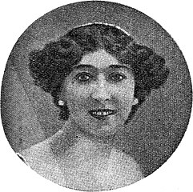

2.533 Wikipedia articles in 90 languages in which images from KB portraits collection are used, grouped by language.
The Category:Portraits from Koninklijke Bibliotheek contains a total of 2.904 images, of which 981 distinct
images are being used 2.737 times to illustrate the 2.533 articles listed below.
This data, including which exact images are used per article, is also available as an Excel file. More structured data formats (csv, json) will be added in the future.
This overview is based on this XML output of the GLAMorous tool d.d. 07-05-2025.
It was generated using the GLAMorousToHTML code.
Also see the documentation of this tool.
Available languages
Dutch (773)
English (279)
German (215)
French (172)
Russian (136)
Egyptian Arabic (105)
Italian (73)
Welsh (69)
Catalan (56)
Spanish (51)
West Frisian (40)
Indonesian (36)
Modern Standard Arabic (36)
Japanese (33)
Ukrainian (32)
Polish (30)
Portuguese (29)
Czech (26)
Swedish (25)
Esperanto (24)
Greek (23)
Nynorsk (21)
Persian (20)
Hebrew (15)
Danish (14)
Slovene (14)
Hungarian (13)
Romanian (13)
Chinese (12)
Bulgarian (11)
Korean (9)
Basque (8)
Galician (7)
Malay (7)
Vietnamese (7)
Afrikaans (5)
Eastern Armenian (5)
Finnish (5)
Belarusian (4)
Georgian (4)
Luxembourgish (4)
Malagasy (4)
Standard Estonian (4)
Turkish (4)
Azerbaijani (3)
Breton (3)
Latin (3)
Serbian (3)
Balinese (2)
Croatian (2)
Limburgish (2)
Macedonian (2)
South Azerbaijani (2)
Walloon (2)
Albanian (1)
Aragonese (1)
Asturian (1)
Bangla (1)
Belarusian (Taraškievica) (1)
Bosnian (1)
Cebuano (1)
Central Bikol (1)
Dutch Low Saxon (1)
Gorontalo (1)
Gujarati (1)
Haitian Creole (1)
Hausa (1)
Icelandic (1)
Irish (1)
Javanese (1)
Kabyle (1)
Kapampangan (1)
Latvian (1)
Lithuanian (1)
Manx (1)
Marathi (1)
Norman (1)
Nynorsk (1)
Occitan (1)
Picard (1)
Piedmontese (1)
Ripuarian (1)
Slovak (1)
Swahili (1)
Tamil (1)
Thai (1)
West Flemish (1)
Yiddish (1)
Zazaki (1)
Zeelandic (1)
Dutch (773)
12e eeuw |
16 december |
20 november |
8 november |
Abraham Jacobus Frederik Fokker van Crayestein van Rengerskerke |
Abraham van Karnebeek |
Adolf Waterman |
Adolph Marius Karel Wolphgangh van Ittersum |
Adolphe Max |
Adriaan Boer |
Adriaan Gerhard |
Adriaan Willem Weissman |
Agnieta Gijswijt |
Albert Funke Küpper |
Albert Kluyskens |
Albert Kluyver |
Albert Kwast |
Albert Pomper |
Albert van Raalte |
Albertus Nicolaas Fleskens |
Albertus de Jong |
Alexander Voormolen |
Alexander de Savornin Lohman |
Alexander van Dedem |
Alexander van Sasse van Ysselt |
Alibert Cornelis Visser van IJzendoorn |
Alida Tartaud-Klein |
Allard van der Borch van Verwolde (1842-1919) |
Allard van der Borch van Verwolde (1881-1944) |
Alphons Sassen |
Alphonse C.Ch.G. van Hemert |
Alphonsus Maria Josephus Ernestus Antonius van Lamsweerde |
Amphora |
Andreas van Toulongeon |
André Spoor (musicus) |
Anke Beenen |
Anna Kappel |
Anna Lambrechts-Vos |
Anna Maria Kruijff |
Anna Sophia Polak |
Anna Tijssen-Bremerkamp |
Annemie Wolff |
Annie de Jong-Zondervan |
Anny Piscaer |
Anthony Brummelkamp (1839-1919) |
Anthony Ewoud Jan Nijsingh |
Antoine Arts |
Antoine van Nispen tot Pannerden |
Anton Verheij |
Anton van Croÿ |
Anton van Rooy |
Antonie Roodhuyzen |
Antonius Everdinus van Kempen |
Antonius van Wijnbergen |
Antoon van Toulongeon |
Antoon van Vergy |
April-meistakingen |
Arend Fokke Simonsz |
Arnold Hendrik de Hartog |
Arnold Spoel |
Arnold van Rossem |
Arnoldus Hyacinthus Maria van Berckel |
Arnoldus van Walsum (1890-1957) |
Arthur Boon |
Arthur Tervooren |
Ary Belinfante |
Asser Benjamin Kleerekoper |
August Daniel Frederik Willem Lichtenbelt |
August Willem Johan van Lanschot |
Auke Komter |
Ballade om freden |
Balthasar van der Pol |
Barend Kwast |
Bart Verhallen |
Bas Savenije |
Bas van der Veer |
Beata van Helsdingen-Schoevers |
Bedelen |
Berhardina Midderigh-Bokhorst |
Bernard Diamant |
Bernard Tellegen |
Bernardus van Clairvaux |
Bernhard van den Sigtenhorst Meyer |
Bert Johan Ouëndag |
Bert van 't Hoff |
Bertha Elias |
Bertha Koopman |
Betsy Bakker-Nort |
Boudewijn I van Lannoy |
Bram Eldering |
Bram van Heel |
Burcht Herzele |
C.L.M. Robbers |
Carel Butter |
Carel Koopman |
Carel Oberstadt |
Carel Wirtz |
Carolus Hubertus Leonardus Bontamps |
Cato Engelen-Sewing |
Charles-Alexis Terlinden |
Charles Schnebbelie |
Charles Sulpice Flament |
Charles T. Liernur |
Charles van Isterdael |
Charles van Wijk |
Chris Beekman |
Christiaan IJnzonides |
Clara Asscher-Pinkhof |
Coby Floor |
Coenraad Lodewijk Walther Boer |
Coert Ebbinge Wubben |
Colart van Brimeu |
Compositie in dissonanten |
Constant Maurits Ernst van Löben Sels |
Cor Alons |
Cor van Gelder |
Cornelis Baard |
Cornelis Bernardus Schuurman |
Cornelis Coenen |
Cornelis Dopper |
Cornelis Frans Jacobus Blooker (1852-1912) |
Cornelis Galesloot |
Cornelis Gijsbert Jan Vreedenburgh |
Cornelis Herman den Hertog |
Cornelis Immig |
Cornelis Jacob den Tex |
Cornelis Jan Snuif |
Cornelis Kuypers |
Cornelis Lely |
Cornelis Loots |
Cornelis van Eesteren |
Cornelis van der Linden |
Cornelius van Vliet |
Cornélie van Zanten |
Courierspel |
Curt van de Sandt |
David Blitz |
David van Brimeu |
De Helmplanters |
De Lannoy (Belgisch adelsgeslacht) |
Derk Welt |
Dibbet Willem Peter Wisboom |
Dinah Kohnstamm |
Dirck Rembrantsz van Nierop |
Dirk Bos |
Dirk Bus |
Dirk Filarski |
Dirk II (graaf) |
Dirk Jan Struik |
Dirk Schermerhorn (ingenieur) |
Dirk de Klerk |
Dirk de Koning |
Dora de Louw |
Dorus Nijland |
Désiré Pauwels |
Edo Johannes Bergsma |
Eduard Cuypers (architect) |
Eduard Ellis van Raalte |
Eduard Erdelmann |
Eduard Fokker |
Eduard Reeser |
Edwin Louis Teixeira de Mattos |
Edzard Tjarda van Starkenborgh Stachouwer (1859-1936) |
Eerke Albert Smidt |
Egbertus Johannes Beumer |
Egbertus Pelinck |
Eldert Johannes van Det |
Eleonora van Aquitanië |
Elisabeth Zernike |
Elze van den Ban |
Emanuel Benedictus |
Emanuel Moresco |
Emil Hendrik Stieltjes |
Emile Alexis Marie van der Kun |
Emile Enthoven |
Emile Vinck |
Emile van Dievoet |
Emile von Brucken Fock |
Emmy Kruijt |
Engelbert Hendrik ter Kuile |
Erich Wichmann |
Ericus Gerhardus Verkade |
Ernst August Schwebel |
Ernst Brinck |
Ernst Steuerwald |
Eugène Brands |
Evangeliarium |
Evangeliarium van Egmond |
Felix Vening Meinesz |
Filips I van Croÿ (graaf van Chimay) |
Filips van Bourgondië-Beveren |
Filips van Crèvecœur |
Floris Willem van Styrum (1855-1929) |
Focus (tijdschrift) |
Fons Windhausen |
Francis de Erdely |
Frank van Borssele |
Frans Beelaerts van Blokland (1872-1956) |
Frans Bolsius |
Frans Hasselaar |
Frans Jozef Feron |
Frans Langeveld |
Frans Smissaert |
Frederic Joseph Maria Anton Reekers |
Frederic Sophie Guillaume Bos |
Frederik August Stoett |
Frederik van Bylandt |
Fridolin Marinus Knobel |
Frits Bakker Schut |
Frits Gaillard |
Frits Koeberg |
Frits van Duinen |
Fécamp psalter |
G.H. Lantman |
Gedenkteken A. A. van Bergen IJzendoorn |
Geert van der Zwaag |
Geesje Mesdag-van Calcar |
Georg Rijken |
Georg Rueter |
George Auguste Vorsterman van Oyen |
George Buff |
Georgine Schwartze |
Gerard Anton van Hamel |
Gerard Bartus van Krieken |
Gerard Hordijk |
Gerard Veerman |
Gerard Zalsman |
Gerardus Jacobus Goekoop |
Gerardus Jacobus van Swaaij |
Gerhard Badrian |
Gerrit Adriaan Arnold Middelberg |
Gerrit Adriaan Bax (1911-1965) |
Gerrit Besselaar |
Gerrit Bramer |
Gerrit Elhorst |
Gerrit Haspels |
Gerrit Jan van den Broek |
Gerrit Jannink (politicus) |
Gerrit Johan Anne Schimmelpenninck |
Gerrit van Blaaderen |
Geuchien Zijlma |
Ghillebert van Lannoy |
Gijsbert d'Aumale van Hardenbroek van Hardenbroek |
Gijsbertus Jaspers |
Gillis Johannis le Fèvre de Montigny (1837-1907) |
Giovanni Antonio Petrucci |
Giselle Kuster |
Giuseppe Occhialini |
Gonne Donker |
Greta Lobo |
Grietje Bijlsma |
Gustaaf Molengraaff |
Gustaaf van der Feltz (1853-1928) |
Gustave Louis Marie Hubert Ruijs de Beerenbrouck |
Gwijde van Brimeu |
Han van Dam |
Harm Ellens |
Harmanus Johannes Groote Balderhaar ten Velde |
Harry Boda |
Harry Son |
Heertjen Ubbo Bouwman |
Hein Israël Waterman |
Heinrich Sellmer |
Helene Goude |
Hendrik Andriessen |
Hendrik Banning |
Hendrik C. van Oort |
Hendrik Elias de Bruyn |
Hendrik Heyman |
Hendrik II van Borselen |
Hendrik Johan Melgers |
Hendrik Martien Willem Werker |
Hendrik Spiekman |
Hendrik Thierry |
Hendrik de Iongh |
Hendrik de Vries (organist) |
Hendrik van Lier |
Hendrik van Oordt |
Hendrika Cornelia de Balbian Verster-Bolderheij |
Hendrika van der Pek |
Henri Boot |
Henri Hack |
Henri Johan van der Schroeff |
Henri Louis Dekking |
Henri Marchant |
Henri Nolen |
Henri Scholtz |
Henri Schoonbrood |
Henri Staal (politicus) |
Henri Völlmar |
Henri Zagwijn |
Henri van Goudoever |
Henri van Nieuwenhoven |
Henricus Paulus Cornelis Bosch van Drakestein |
Henriëtte van den Brandeler |
Henry Zwiers |
Heraut |
Herman Jacob Kist (1836-1912) |
Herman Johannes den Hertog (schaker) |
Herman Koppeschaar |
Herman Rutters |
Herman Scholtens |
Hertogdom Limburg (1061-1795) |
Hildegard van Vlaanderen |
Hildo Krop |
Hindrik Hofstee Aukema |
Hoge Vierschaar van Zeeland |
Hubert Cuypers |
Hubert Menten |
Hugo Nolthenius (1848-1929) |
Hugo van Gijn |
Hugo van Lannoy |
Hugues Alexandre Sinclair de Rochemont |
Huis Lalaing |
Ida Heijermans |
Iet van Feggelen |
Inge Sørensen |
Isaac Antoni van Roijen (1859-1938) |
Isaäc Burchard Diederik van den Berch van Heemstede |
Isaäc Mossel |
J.J.P. van Boxtel |
J.V. de Groot |
J. Henri Oushoorn |
Jaap Dooijewaard |
Jaap Vogelaar |
Jac. van Kempen |
Jac. van den Bosch |
Jacob Adriaan Kalff |
Jacob Adriaan Nicolaas Patijn |
Jacob Clay |
Jacob Menno Tienstra |
Jacob Willem Arriëns |
Jacob van Reenen |
Jacoba Repelaer van Driel |
Jacoba van Heemskerck |
Jacobus Antonius Nicolaas Travaglino |
Jacobus Heiblocq |
Jacobus I van Luxemburg-Fiennes |
Jacobus Joännes van Deinse |
Jacobus Lebret |
Jacobus Marinus Pijnacker Hordijk |
Jacobus Urlus |
Jacqueline Hillen |
Jacques Davidson |
Jacques Hartog (musicus) |
Jacques Paul Delprat |
Jacques Van Aertselaer |
Jacques de Lalaing (1421-1453) |
Jan Alouisius Lambertus Maria Loeff |
Jan Altink |
Jan Ankerman (politicus) |
Jan Bleys |
Jan Coops |
Jan Dirk van Wassenaer van Rosande |
Jan Duijs |
Jan Floris Martinet |
Jan Franken Pzn. |
Jan Gerko Wiebenga |
Jan Gerrit Jordens |
Jan Gratama |
Jan Grauls (politicus) |
Jan Heemskerk (politicus) |
Jan Hendrik Joseph Beckers |
Jan Hendrik de Boer |
Jan Hendrik de Waal Malefijt |
Jan Hermanus Besselaar |
Jan Hudig |
Jan III van Lannoy |
Jan II van Alençon (1409-1476) |
Jan II van Croÿ |
Jan II van Luxemburg-Ligny |
Jan IV van Melun |
Jan Ingenhoven |
Jan Jacob Willinge (1849-1926) |
Jan Kater |
Jan Liebbe Bouma |
Jan Musch (toneel) |
Jan Philip de Bordes |
Jan Reder |
Jan Rijken |
Jan Samuel François van Hoogstraten |
Jan Schokking |
Jan Sol |
Jan Striening |
Jan Toorop |
Jan VI van Soissons |
Jan V van Bretagne |
Jan Van Houtte |
Jan Voetelink |
Jan Willem Cornelis Tellegen (1859-1921) |
Jan Willem Gustaaf Stieneker |
Jan Willem Hugo Lambach |
Jan Willem IJzerman |
Jan Woltjer (classicus) |
Jan ter Laan |
Jan van Alphen |
Jan van Best |
Jan van Bourgondië (1415-1491) |
Jan van Hout (stadssecretaris) |
Jan van Luxemburg (1400-1466) |
Jan van Roubaix |
Jan van Teeffelen (architect) |
Jan van der Clyte |
Jan van der Lande |
Jan van der Molen |
Janny van Wering |
Jean de Villiers de L'Isle-Adam |
Jeannette Mossel-Belinfante |
Jetze Doorman |
Jo Juda |
Jo Schreve-IJzerman |
Jo Teunissen-Waalboer |
Jo Thijsse |
Jo van der Heijden |
Joannes Anthonius Stefanus van Schaik |
Joannes Gerardus Antonius Rutten |
Joannes Jansen |
Joannes Sebastianus Jansen |
Joh.H. Sikemeier |
Johan Berghout |
Johan Bothenius Lohman |
Johan Brautigam |
Johan Carel de Leeuw |
Johan Frans van Bemmelen |
Johan Heinrich Blum |
Johan Hugo Wicher Quirijn ter Spill |
Johan Kooper |
Johan Schmier |
Johan Schoonderbeek |
Johan Smit (musicus) |
Johan Stein |
Johan Strootman |
Johan Wijsman |
Johan Wilhelm Welcker |
Johan van Coimbra |
Johan van Hell |
Johan van Heurn (waterbouwkundige) |
Johannes Andries de Zwaan |
Johannes Antonius Veraart |
Johannes Bernardus Bernink |
Johannes Franciscus Jansen |
Johannes Gottlieb Bijl |
Johannes Hendricus Donner |
Johannes Jurgens |
Johannes Krap |
Johannes Leendert van Soest |
Johannes Marcus Willem van Elzelingen |
Johannes Petrus Judocus Wierts |
Johannes Philippus Backx |
Johannes Wijnand Meyll |
Johannes van Oldenborgh |
Johannes van der Corput |
Jonas Ingenohl |
Joost van Lalaing |
Joost van Vollenhoven (1866-1923) |
Jos. E. Vogt |
Jos Orelio |
Jos Tijssen |
Josef Cohen |
Joseph Antonius Verheijen |
Joseph Groenen |
Joseph Hollman |
Joseph Jacob Isaacson |
Josephine Baerveldt-Haver |
Josephus Hendrikus Bardoel |
Jozef Jan Pompe van Meerdervoort |
Jozef Muls |
Jozef Rondou |
Jules Cornelis van Randwijck |
Jules Moormann |
Julia Cuypers |
Jurjen Koksma |
Jérôme Leussink |
KIT-gebouw |
Kabinet-Colijn I |
Kabinet-Colijn II |
Kabinet-Colijn III |
Kabinet-De Geer II |
Kabinet-De Meester |
Kabinet-Gerbrandy I |
Kabinet-Gerbrandy II |
Kabinet-Heemskerk |
Kabinet-Mackay |
Kabinet-Ruijs de Beerenbrouck III |
Kabinetsformatie Nederland 1901 |
Karel Albert |
Karel August Textor |
Karel van Orléans |
Katharina Leopold |
Kees Reedijk |
Kees van Peursen |
Kit Klein |
Klaas Dekker (burgemeester) |
Klaas Jaspers van den Akker |
Klaas Kater |
Klaas de Boer Czn. |
Klok (bel) |
Ko Cossaar |
Koninklijk Concertgebouworkest |
Koninklijke Joh. Enschedé |
Koninklijke Vereniging van Organisten en Kerkmusici |
Lambert de Ram |
Lambertus Zijl |
Laurentius Nicolaas Deckers |
Leander Schlegel |
Leendert Brummel |
Leo Lauer |
Leo Octave Marie van Nispen tot Sevenaer |
Leo van Wensen |
Leon C. Bouman |
Liesbeth Poolman-Meissner |
Lijst van Nederlandse ministers van Buitenlandse Zaken |
Lijst van Nederlandse ministers van Justitie |
Lijst van bisschoppen van Paramaribo |
Lijst van burgemeesters van Helden |
Lijst van burgemeesters van Montfort |
Lijst van burgemeesters van Vught |
Lijst van burgemeesters van Westkapelle (Nederland) |
Lijst van eredoctoraten van de Radboud Universiteit Nijmegen |
Lijst van eredoctoraten van de Universiteit Leiden |
Lijst van eredoctoraten van de Universiteit Utrecht |
Lijst van eredoctoraten van de Universiteit van Amsterdam |
Lijst van feministen |
Lijst van graven van Lalaing |
Lijst van heren en markiezen van Veere |
Lijst van partijleiders van de CHU |
Lijst van personen overleden in 1947 |
Lijst van personen overleden in 1948 |
Lijst van personen overleden in 1972 |
Lijst van personen overleden in 1978 |
Lijst van procureurs-generaal bij de Hoge Raad der Nederlanden |
Lijst van rectores magnifici van Tilburg University |
Lijst van rectores magnifici van de Radboud Universiteit Nijmegen |
Lijst van rectores magnifici van de Rijksuniversiteit Groningen |
Lijst van rectores magnifici van de Technische Universiteit Delft |
Lijst van rectores magnifici van de Vrije Universiteit Amsterdam |
Lijst van stadsarchitecten van Maastricht |
Lijst van tekeningen van Rembrandt van Rijn |
Lijst van tot levenslang veroordeelden in Nederland |
Lijst van voorzitters van de Tweede Kamer |
Lili Green |
Lily Knibbeler |
Lode Sengers |
Lodewijk Ernst Visser |
Lodewijk Henrick Johan Mari van Asch van Wijck |
Lodewijk de Koninck |
Lou Asperslagh |
Lou Otten |
Louis Schnitzler |
Louis Wolff (violist) |
Louis Zimmermann (1873-1954) |
Louis de Vries (trompettist) |
Louise van Eeghen |
Maarten Zwollo |
Manna de Wijs-Mouton |
Manus van der Ven |
Marcel van Grunsven |
Marie Adrianus van Nieukerken |
Marie Landré |
Marie van Eijsden-Vink |
Marinus Frederik Andries Gerardus Campbell |
Marinus Vreugde |
Marius Duintjer |
Marius Kerrebijn |
Marius van 't Kruijs |
Marius van Haaften |
Markizaat Veere |
Martin Heuckeroth |
Martin Spanjaard |
Martin de Ras |
Martin van Waning |
Matheus van Foix-Comminges |
Mathieu Lauweriks |
Mathilde Cohen Tervaert-Israëls |
Maup Mendels |
Maurits Anton Brants |
Maurits van Asch van Wijck |
Max Charles Emile Bongaerts |
Max Kloos |
Max Mossel |
Max Oróbio de Castro |
Max Raedecker |
Max Tetzner |
Max van de Sandt |
Meester van de gebedenboeken omstreeks 1500 |
Meinard Tydeman (1854-1916) |
Mello Sichterman |
Michael Petrus Arnoldus Meissen |
Michel Velleman |
Michiel Noordewier |
Nanne Sluis Pzn. |
Nederlandse literatuur |
Neeltje Lokerse |
Nelly van der Linden van Snelrewaard-Boudewijns |
Nicolaas Arie Bouwman |
Nicolaas August Tonckens |
Nicolaas Hendrik Nierstrasz |
Nicolaas Westendorp Boerma |
Nieuw Eykenduynen |
Nikolaas Anthony Marinus van den Thoorn |
Noé Vernède |
Octaaf van Nispen tot Sevenaer |
Ontstaansgeschiedenis van het Wilhelminakanaal |
Onze Musici |
Opperraad van de Aloude en Aangenomen Schotse Ritus voor het Koninkrijk der Nederlanden |
Oscar Haffmans (1859-1933) |
Otto Frank |
Otto Jacob Eifelanus van Wassenaer van Catwijck |
Otto Jan Herbert van Limburg Stirum |
Oude man met baard |
Patrick Blackett |
Paul Allossery |
Paul C. Koerman |
Paul Vidal |
Paul Windhausen (1892-1945) |
Paul Windhausen (1903-1944) |
Paul de Jongh |
Peter II van Saint-Pol |
Peter I van Luxemburg |
Peter Ton |
Petrus Boele Jacobus Ferf |
Petrus Franciscus Fruytier |
Petrus Hendrik Roessingh |
Petrus Johannes van Beyma |
Petrus Scriverius |
Philip Loots (componist) |
Philipp Christiaan Molhuysen |
Philippe Pot |
Philippus Baldaeus |
Phons Dusch |
Pierre Cuypers jr. |
Pierre de Soete |
Piet Haazevoet |
Piet Keuning |
Piet Nolting |
Piet Peters (kunstenaar) |
Piet van Mever |
Pieter Christiaan Jacobus Hennequin |
Pieter Cornelis 't Hooft |
Pieter Eduard Verkade |
Pieter Frans Gabriel Alphons Geradts |
Pieter Johannes de Kanter |
Pieter Lodewijk Tak |
Pieter Paul de Beaufort |
Pieter van der Meer de Walcheren |
Pieter von Fisenne |
Prad (reclamebureau) |
Ralph Kronig |
Raymond van Bergen |
Reg Butler |
Regnier Pot |
Regout (geslacht) |
Reinoud II van Brederode |
René Goubau |
Richard Krüger |
Richard Stronck |
Richard van Helvoirt Pel |
Rie Beisenherz |
Robert de Roos |
Roeland van Uutkerke |
Roelf Jongman |
Roelof Bijlsma |
Rooms-Katholieke Kerk |
Rudolf Adriaan van Sandick (1855-1933) |
Rudolf Patijn |
Russel-Tiglia |
Ruth Hiller |
Saar Bessem |
Sam Swaap |
Schelto van Heemstra (1842-1911) |
Simon Hendrik Anton Begemann |
Simon van Lalaing |
Simon van Milligen |
Slag bij Guinegate (1479) |
Slingerbal |
Solco Walle Tromp |
Sophie Heymann |
Staphorster Boertje |
Stedelijk Gymnasium Leiden |
Steven van Groningen (musicus) |
Suezcrisis |
Suze Groshans |
Suze Maathuis-Ilcken |
Suzie Klein |
Syb Talma |
Synnøve Lie |
Theo Frenkel sr. |
Theo Heemskerk |
Theo van der Bom |
Theodoor Karel van Lohuizen |
Theodoor Philibert Tromp |
Theodoor Verhey |
Theodoor de Bry |
Theodore Haver |
Theodore Matthieu Ketelaar |
Thom Denijs |
Tijdlijn van de Lage Landen (steden en vorstendommen) |
Tijdlijn van de Nederlandse geschiedenis |
Tilia Hill |
Tilly Koenen |
Tine Baanders |
Tine Clevering-Meijerprijs |
Toni Arens-Tepe |
Toon de Jong |
Truus Klapwijk |
Uiver |
Ulbo Jetze Mijs |
Universiteitsbibliotheek van Amsterdam |
Vereenigde Oostindische Compagnie |
Vergissing van Troelstra |
Verkade (bedrijf) |
Victor de Stuers |
Vincent van den Heuvel |
W.G. van de Hulst sr. |
Walter Robyns |
Walther Simon Joseph van Waterschoot van der Gracht |
Warner T. Koiter |
Weduwschap |
Wicher Jacob Woldringh van der Hoop |
Wijnand Heineken |
Wijnand Zeeuw |
Wilhelmina Drupsteen |
Wilhelmus Jacobus Mattheüs Christianus Friesen |
Wilhelmus Johannes Franciscus Juten |
Wilhelmus Josephus Jongmans |
Wilhelmus Wulfingh |
Willem Albarda (1877-1957) |
Willem Alexander van Dijck |
Willem Andriessen |
Willem Carel Antoon Alberda van Ekenstein |
Willem Coenen (pianist) |
Willem Cornelis Johannes Josephus Cremers |
Willem Dolk |
Willem Feltzer |
Willem Helsdingen |
Willem Hendrik Bogaardt |
Willem Hendrikus van den Berg |
Willem Henricus Jacobus Theodorus van Basten Batenburg |
Willem Hubert van Blijenburgh |
Willem Hutschenruijter |
Willem IV van Egmont |
Willem Jacob Backer |
Willem Karel du Croix |
Willem Keijzer |
Willem Kromhout |
Willem Landré |
Willem Leliman |
Willem Passtoors (1856-1916) |
Willem Petri |
Willem Prinzen |
Willem Robert (1847-1914) |
Willem Steelink Sr. |
Willem Theodoor Cornelis van Doorn |
Willem Valk |
Willem Vliegen |
Willem Wenckebach |
Willem de Boer |
Willem de Jong |
Willem de Vlugt |
Willem van Thienen |
Willem van Vienne |
Willem van de Walle |
Willem van der Vlugt |
Willy Burgers |
Willy den Turk |
Wim Lambooy |
Wim van Drimmelen |
Wolfert VI van Borselen |
Wouter Hutschenruijter (1859-1943) |
Wouter Salomon Johannes Tenkink |
Wulfert Floor |
Yvan Goll |
Zadok van den Bergh
English (279)
1453 in France |
1888 Dutch cabinet formation |
1901 Dutch cabinet formation |
1934 KLM Douglas DC-2 crash |
1951 mass arrests in Indonesia |
4th World Congress of the Communist International |
Abraham van Karnebeek |
Adrianus de Jong |
Albert Christian Kruyt |
Albertus van Raalte |
Albrecht Ritschl |
Alexander Voormolen |
Alexander de Savornin Lohman |
Alfonso V of Aragon |
Ali Joego |
Amsterdam IX (electoral district) |
Andreas Smits |
Anke Beenen |
Annemie Wolff |
Antoine I de Croÿ |
Anton van Rooy |
April–May strikes |
Arend Fokke Simonsz |
Athletics at the 1928 Summer Olympics – Men's triple jump |
Balthasar van der Pol |
Bearded Old Man |
Bernhard van den Sigtenhorst Meyer |
Bertha Elias |
Bertha Frensel Wegener |
Betsy Bakker-Nort |
Beverwijk (electoral district) |
Bram Eldering |
Bruno Walter |
Carel de Villeneuve |
Carl Schwartz |
Charles, Duke of Orléans |
Charles Terlinden |
Charles the Bold |
Christian Historical Union |
Christian democracy in the Netherlands |
Cobie Floor |
Coenraad Lodewijk Walther Boer |
Coenraad V. Bos |
Cor van Gelder |
Cornelis Dopper |
Cornelis van Eesteren |
Cornelius Wessels |
Cornélie van Zanten |
Counts of Ligny |
Courier chess |
Curt van de Sandt |
De Meester cabinet |
Den Helder (electoral district) |
Die ersten Menschen |
Dirck Rembrantsz van Nierop |
Dirk II, Count of Holland |
Djaoeh Dimata |
Djokosoedjono |
Dordrecht |
Dorus Nijland |
Duke of Montalto (defunct) |
Dutch-language literature |
Dutch people |
Edwin Teixeira de Mattos |
Egmond Abbey |
Egmond Gospels |
Elias Melkman |
Elisabeth Scott |
Elze van den Ban |
Eric Lee (footballer) |
Ericus Verkade |
Eugène Brands |
Fascism in the Netherlands |
Ferdinand I of Naples |
First Gerbrandy cabinet |
Flemish literature |
Francis de Erdely |
Frank van Borssele |
Frans Hubert Edouard Arthur Walter Robyns |
Frans Langeveld |
Gagak Item |
Gaston Eyskens |
Geesje Mesdag-van Calcar |
Gelske Venema-Brouwer |
Genangan Air Mata |
Giovanni Giandomenici |
Giuseppe Occhialini |
Governor of Jakarta |
Guillebert de Lannoy |
Guy of Brimeu |
Hakoah Vienna |
Hans Steinhoff |
Hedy Bienenfeld |
Helenius de Cock |
Hendrick ten Oever |
Hendrik Constantijn Cras |
Hendrik de Iongh |
Hendrika van der Pek |
Henri Dekking |
Henri Frédéric Boot |
Henri Zagwijn |
Henri Zwiers |
Henriëtte van den Brandeler |
Hermann Conring (politician) |
Hildegard of Flanders |
History of graphic design |
Hok Hoei Kan |
Hollands Kroon |
House of Aviz |
House of Croÿ |
House of Lannoy |
Hubert Menten |
Hugo Sinclair de Rochemont |
Hugo van Lannoy |
IEEE Medal of Honor |
Iconography of Charlemagne |
J. L. C. Pompe van Meerdervoort |
Jacob Clay |
Jacob Kalff |
Jacob van Geuns |
Jacoba van Heemskerck |
Jacques Delprat |
Jacques Urlus |
Jacques de Lalaing |
Jacques de Luxembourg, Seigneur de Richebourg |
Jan Altink |
Jan Goedhart |
Jan Hendrik de Boer |
Jan Hendrik de Waal Malefijt |
Jan Hillebrand Wijsmuller |
Jan Schokking |
Jan Willem Cornelis Tellegen |
Jan ter Laan |
Jean, bastard of Luxembourg |
Jean II, Duke of Alençon |
Jean II de Croÿ |
Jean Monnet |
Jean de Créquy |
Jean de Lannoy |
Jean de Villiers de L'Isle-Adam |
Jean de la Trémoille (1377–1449) |
Jetze Doorman |
Jo Teunissen-Waalboer |
Jo Thijsse |
Joh. Enschedé |
Johan Stein |
Johan van Hell |
Johannes Bernardus Bernink |
Johannes Henricus Gerardus Jansen |
Johannes Leendert van Soest |
Johannes van der Corput |
John II, Count of Ligny |
John II, Count of Nevers |
John II of Aragon |
John Milne |
John W. Garrett (diplomat) |
John of Coimbra, Prince of Antioch |
John of Luxembourg, Count of Soissons |
Joop Carp |
Joost de Lalaing |
Joseph Mansion |
Julius Raes |
Jurjen Ferdinand Koksma |
Kit Klein |
Ko Cossaar |
Laurent Deckers |
Leen van Beuzekom |
List of Aragonese monarchs |
List of Catholic clergy scientists |
List of King's and Queen's commissioners of Zeeland |
List of Sardinian monarchs |
List of drawings by Rembrandt |
List of knights and ladies of the Garter |
List of members of the Indonesian House of Representatives (1956–1959) |
List of ministers of agriculture of the Netherlands |
List of ministers of defence of the Netherlands |
List of ministers of economic affairs of the Netherlands |
List of ministers of finance of the Netherlands |
List of ministers of infrastructure of the Netherlands |
List of ministers of justice of the Netherlands |
List of ministers of kingdom relations of the Netherlands |
List of ministers of social affairs of the Netherlands |
List of ministers of the interior of the Netherlands |
List of nominees for the Nobel Prize in Literature |
List of nominees for the Nobel Prize in Physics |
List of rectores magnifici of Delft University of Technology |
List of rectores magnifici of the Vrije Universiteit Amsterdam |
List of speakers of the House of Representatives (Netherlands) |
Lodewijk de Koninck |
Loosduinen (electoral district) |
Lords of Westerlo |
Louis I, Duke of Orléans |
Louis Otten |
Louis de Gruuthuse |
Mackay cabinet |
Mangaradja Soangkoepon |
Marie Landré |
Marotte |
Martinus Cobbenhagen |
Mathieu de Foix-Comminges |
Michel Velleman |
Middle Dutch literature |
Mineichirō Adachi |
Musso |
Nederlandse Centrale Catalogus |
Nellie van Kol |
Nicolaas Govert de Bruijn |
Noesa Penida |
Order of the Dragon |
Oud Eik en Duinen |
Patrick Blackett |
Paul Alex Blaauw |
Paul Vidal |
Peter I, Count of Saint-Pol |
Peter II, Count of Saint-Pol |
Petrus Scriverius |
Philip II, Duke of Savoy |
Philip I of Croÿ-Chimay |
Philip of Burgundy-Beveren |
Philipp Christiaan Molhuysen |
Philippe de Commines |
Philippe de Crèvecœur d'Esquerdes |
Philippus Baldaeus |
Pierre de Soete |
Pieter Adriaan Jacobus Moojen |
Pieter Philippus Jansen |
Presentation miniature |
Puck Oversloot |
Ralph Knott |
Ralph Kronig |
Red Week (Netherlands) |
Reg Butler |
Reinoud II van Brederode |
Rie Beisenherz |
Rie de Balbian Verster-Bolderheij |
Robert Regout (politician) |
Rudi Stephan |
Salut drapeau! |
Sam Swaap |
Schleuderball |
Second Colijn cabinet |
Second De Geer cabinet |
Second Gerbrandy cabinet |
Siege of Oudenaarde |
Simon de Lalaing |
Sinar Sumatra |
Soekaesih |
Solco Walle Tromp |
St Pancras South (UK Parliament constituency) |
Swimming at the 1948 Summer Olympics – Women's 200 metre breaststroke |
Synnøve Lie |
The Teng Chun |
Theo Becking |
Theo Heemskerk cabinet |
Theo Tromp |
Theo de Meester |
Third Colijn cabinet |
Third Ruijs de Beerenbrouck cabinet |
Tietje Spannenburg-Pagels |
Timotheus Verschuur |
Tine Baanders |
Titia Bergsma |
Truus Klapwijk |
Van Zuylen van Nijevelt cabinet |
Verné Lesche |
Victor de Stuers |
Vierverlaten sugar factory |
Warner T. Koiter |
Wilhelmina Drupsteen |
Willem Albarda |
Willem Hubert van Blijenburgh |
Willem Vliegen |
William IV, Lord of Egmont |
Willy den Turk |
Wolfert VI of Borselen |
Yrjö Saastamoinen |
Yvan Goll |
Zandenburg |
Émile van Dievoet
German (215)
101 Vrouwen en de oorlog |
16. August |
30. Juli |
Adriaan Willem Weissman |
Agnieta Gijswijt |
Albert Jan Kluyver |
Albert van Raalte |
Albrecht Ritschl (Theologe) |
Alexander Voormolen |
Andrieu d’Humières |
André de Toulongeon |
Anna Brugh Singer |
Annemie Wolff |
Antoine I. de Croÿ |
Antoine de Toulongeon |
Antoine de Vergy |
Anton van Rooy |
Arnold Földesy |
Balthasar van der Pol |
Bas van der Veer |
Belagerung Colombos |
Ben Ali Libi |
Berhardina Midderigh-Bokhorst |
Bernard Tellegen |
Bernhard von Clairvaux |
Bibliotheca chalcographica |
Bronkhorst (Adelsgeschlecht) |
Burchard von Michelbach |
Burg Châteauneuf-en-Auxois |
Carel Koopman |
Carl Völckers (Jurist) |
Charles de Valois, duc d’Orléans |
Christelijk-Historische Unie |
Claude de Montaigu |
Colart de Brimeu |
Cor Alons |
Cornelis Christiaan Berg (Philologe) |
Cornélie van Oosterzee |
Corps Hannovera Göttingen |
Croÿ |
David de Brimeu, Seigneur de Ligny |
De Vrouw 1813–1913 |
Dietrich II. (Holland) |
Dinah Kohnstamm |
Dirck Rembrantsz van Nierop |
Dirk Bos |
Dirk Schäfer (Komponist, 1873) |
Dirk Struik |
Dorus Nijland |
Eduard Ellis van Raalte |
Egmond (Adelsgeschlecht) |
Elisabeth Scott |
Else Berg |
Emile van Dievoet |
Erich Wichmann |
Ernst August Schwebel |
Ernst Michel |
Eugène Brands |
Felix Andries Vening-Meinesz |
Ferdinand-Hestermann-Institut |
Ferdinand Hestermann |
Fidentius van den Borne |
Finlandssvenska bragdmedaljen |
Frank II. von Borsselen |
Frans Olbrechts |
Franz Alard |
Friedrich IV. (Moers) |
Frits Bakker Schut |
Frédéric Bettex |
Geesje Mesdag-van Calcar |
Gerhard Badrian |
Gerrit Willem van Blaaderen |
Ghillebert de Lannoy |
Grafschaft Moers |
Guillaume III. de Vienne |
Gustaaf Adolf Frederik Molengraaff |
Guy III. de Pontailler |
Guy Pot |
Guy de Brimeu |
Guy de Roye (Militär) |
H. A. Sinclair de Rochemont |
Hauptwerke der ottonischen Buchmalerei |
Haus Vergy |
Heinrich II. von Borsselen |
Hendrik Constantijn Cras |
Hendrik Elias |
Hendrika van der Pek |
Henri Heyman |
Hermann Conring (Politiker) |
Hubert Menten |
Hugo Nolthenius |
Hugo von Lannoy |
Hövell |
Ida Heijermans |
Inge Sørensen |
Iñigo de Guevara |
Jacques de Bourbon († 1468) |
Jacques de Brimeu |
Jacques de Crèvecœur |
Jacques de Lalaing |
Jacques de Luxembourg-Ligny |
Jan Hendrik de Boer |
Jan Hendrik de Waal Malefijt |
Jean Damas |
Jean I. de Neufchâtel |
Jean II. de Croÿ |
Jean II. de Neufchâtel |
Jean IV. de Melun |
Jean IV. de Vergy |
Jean IV. d’Auxy |
Jean Le Tavernier |
Jean V. de Créquy |
Jean de La Trémoille |
Jean de Luxembourg |
Jean de Rubempré |
Jean de Villiers de L’Isle-Adam |
Jean de la Clite |
Jo Schreve-IJzerman |
Joannes Coenraad Jansen |
Johan Frans van Bemmelen |
Johan Pompe van Meerdervoort |
Johan Stein |
Johann (Marle und Soissons) |
Johann II. (Alençon, Herzog) |
Johann II. (Burgund-Nevers) |
Johann II. (Ligny) |
Johann IV. von Neuenburg |
Johann V. von Roubaix |
Johann VI. (Bretagne) |
Johann von Coimbra |
Johann von Lannoy |
Johannes Ludovicus Mathieu Lauweriks |
Johannes van der Corput |
John W. Garrett (Diplomat) |
Joop Carp |
Josephine Baerveldt-Haver |
Josse de Lalaing |
Jurjen Koksma |
Kabinett Cort van der Linden |
Kabinett Heemskerk |
Kitty Jantzen |
Kloster Egmond |
La Trémoille |
Lambertus Zijl |
Liste der Biografien/Bry |
Liste der Biografien/Char |
Liste der Biografien/Schwe |
Liste der Mitglieder des Niedersächsischen Landtages (2. Wahlperiode) |
Liste der Rektoren der Universität Utrecht |
Liste der Stenografie-Systeme und ihrer Erfinder |
Liste der Teilnehmer der Synode von Dordrecht |
Liste von illustrierten Evangeliaren |
Loeben (Adelsgeschlecht) |
Louis de Chalon-Châtel-Guyon |
Marius van Haaften |
Martin Spanjaard |
Mathieu de Foix-Comminges |
Musikjahr 1943 |
Neeltje Lokerse |
Nicolaas Govert de Bruijn |
Olympische Sommerspiele 1928/Leichtathletik |
Olympische Sommerspiele 1928/Leichtathletik – 100 m (Frauen) |
Olympische Sommerspiele 1928/Leichtathletik – 110 m Hürden (Männer) |
Olympische Sommerspiele 1928/Leichtathletik – Speerwurf (Männer) |
Olympische Sommerspiele 1948/Leichtathletik – Speerwurf (Frauen) |
Peter I. (St. Pol und Brienne) |
Peter II. (St. Pol und Brienne) |
Petrus Scriverius |
Philipp Christiaan Molhuysen |
Philipp von Burgund (Admiral) |
Philippe I. de Croÿ, comte de Chimay |
Philippe Pot |
Philippe de Commynes |
Philippe de Crèvecœur |
Philippe de Ternant |
Philippus Baldaeus |
Pierre de Bauffremont |
Piet van Mever |
Pieter van der Meer de Walcheren |
Reginald Cotterell Butler |
Reinoud II. van Brederode |
Richard van Helvoirt-Pél |
Rie Beisenherz |
Robert de Masmines |
Roelof Oberman |
Roland von Uutkercke |
Roomsch-Katholieke Staatspartij |
Rudi Stephan |
Rudolf Adriaan van Sandick |
Ruprecht IV. (Virneburg) |
Régnier Pot |
SC Hakoah Wien |
Schleuderballspiel |
Simon de Lalaing |
Solco Walle Tromp |
Terashima Munenori |
Theodoor Verhey |
Theodor de Bry |
Theodore Haver |
Thiébaut IX. de Neufchâtel |
Thiébaut VIII. de Neufchâtel |
Tine Baanders |
Titia Bergsma |
Victor Leemans |
Warner T. Koiter |
Wilhelm von Egmond |
Wilhelmina Drupsteen |
Wilhelmina den Turk |
Wilhelmus Josephus Jongmans |
Willem Albarda |
Willem Elenbaas |
Willem Hendrik de Beaufort |
Willem van der Vlugt |
Wolfhart VI. von Borsselen |
Yvan Goll
French (172)
Albert Kluyskens |
Albertus Antonie Nijland |
Andrieu d’Humières |
André de Toulongeon |
Anna Sophia Polak |
Anthologie de la poésie française (Georges Pompidou) |
Antoine Ier de Croÿ |
Antoine de Toulongeon |
Antoine de Vergy |
Antonius van Wijnbergen |
Armorial des maréchaux de France |
Balthasar van der Pol |
Bataille de Verneuil (1424) |
Benedictus Springer |
Bernhard van den Sigtenhorst Meyer |
Bertha Frensel Wegener |
Betty Robinson |
Bugnicourt |
Carmen Vildez |
Charles Abraas |
Charles Ier d'Orléans |
Charles Terlinden |
Château des Princes de Croÿ |
Cinéma indonésien |
Claude de Montaigu |
Cornelius Wessels |
David van Dantzig |
Eduard Cuypers |
Edzard Tjarda van Starkenborgh Stachouwer |
Elisabeth Scott |
Emiel Van Coppenolle |
Emile Vinck |
Eugène Brands |
Ferdinand Ier (roi de Naples) |
Fernand Van Goethem |
Frédéric Bettex |
Frédéric IV de Moers |
Gaston Eyskens |
Guillaume d'Egmont |
Guillaume de Vienne |
Guillebert de Lannoy |
Guy de Brimeu |
Guy de Roye (chevalier) |
Hans Steinhoff |
Hedy Bienenfeld |
Hendrik Andriessen |
Henri II de Borsele |
Henri Zagwijn |
Histoire de Luzarches |
Histoire de la Franche-Comté |
Hugues de Lannoy |
Inge Sørensen |
Isaäc Burchard Diederik van den Berch van Heemstede |
J. L. C. Pompe van Meerdervoort |
Jacoba van Heemskerck |
Jacques Ier de Luxembourg-Fiennes |
Jacques de Bourbon (1445-1468) |
Jacques de Lalaing (1421-1453) |
Jacques de Luxembourg-Ligny |
Jacques van Maerlant |
Jan Altink |
Jan Arnoldus Schouten |
Jan Grauls (1887-1960) |
Jan Hendrik de Boer |
Jean II d'Alençon (Valois) |
Jean II de Croÿ |
Jean II de Luxembourg-Ligny |
Jean II de Neufchâtel-Montaigu |
Jean II de Rubempré |
Jean IV d'Auxy |
Jean IV de Melun |
Jean IV de Vergy |
Jean Ier de Neufchâtel-Montaigu |
Jean V de Bruges |
Jean V de Créquy |
Jean V de Roubaix |
Jean de Bourgogne (1415-1491) |
Jean de Coimbra |
Jean de La Clite |
Jean de La Trémoille |
Jean de Lannoy |
Jean de Luxembourg-Soissons |
Jean de Luxembourg (1400-1466) |
Jean de Villiers de L'Isle-Adam |
Johan Stein |
Johannes Bogerman |
Johannes van der Corput |
Joop Carp |
Jopie Waalberg |
Joseph Cuypers |
Joseph Mansion |
Josse de Lalaing |
Juan de Guevara |
Jurjen Koksma |
Karel Albert |
Kit Klein |
L.N. Van Beusekom |
La Motte-Ternant |
Le Joueur d'échecs (de Bray) |
Ligny-sur-Canche |
Liste des bourgmestres d'Amsterdam |
Liste des comtes de Blois |
Liste des dessins de Rembrandt |
Liste des héritiers du trône d'Aragon |
Liste des héritiers du trône de France |
Liste des héritiers du trône de Sardaigne |
Liste des personnes qui ont gardé le drapeau olympique |
Liste des seigneurs puis marquis de Richebourg |
Littérature moyen-néerlandaise |
Littérature néerlandaise |
Lodewijk de Koninck |
Lou Otten |
Louis Braille |
Louis Regout (1832-1905) |
Louis de Chalon-Arlay (1448-1476) |
Louis de Gruuthuse |
Maison de Croÿ |
Maison de Melun |
Maison de Neufchâtel |
Maison de Valois-Alençon |
Maria Baers |
Marie Baron |
Marthe Antoine Gérardin |
Martin Spanjaard |
Mathieu de Foix (comte de Comminges) |
Naissance en 1423 |
Nelly van der Linden |
Origine ethnique et apparence de Jésus |
Paul Loyonnet |
Paul Vidal |
Pedro Folch de Cardona y Villena |
Philippe Baldée |
Philippe Ier de Croÿ-Chimay |
Philippe Pot |
Philippe de Bourgogne-Beveren |
Philippe de Commynes |
Philippe de Crèvecœur d'Esquerdes |
Philippe de Ternant |
Pierre II de Luxembourg-Saint-Pol |
Pierre Ier de Luxembourg-Saint-Pol |
Pierre de Bauffremont |
Pierre de Soete |
Psautier de Fécamp |
Quentin Durward |
Reg Butler |
Renaud II de Brederode |
Robert de Masmines |
Roland d'Uytkercke |
Rupert IV de Virnebourg |
Saint-Omer (Pas-de-Calais) |
Simon VIII de Lalaing |
Stathouder |
Syb Talma |
Tartu |
Ternant (Côte-d'Or) |
Ternant (Nièvre) |
Ternois |
Theo Frenkel |
Thierry II de Frise occidentale |
Thiébaut IX de Neufchâtel |
Thiébaut VIII de Neufchâtel |
Victor de Stuers |
Walter Robyns |
Warner Koiter |
Wilhelmus Josephus Jongmans |
Willem Andriessen |
Willem Hubert van Blijenburgh |
Willy den Turk |
Wolfert VI van Borssele |
Yvan Goll |
Émile van Dievoet |
Évangéliaire d'Egmond
Russian (136)
Алберт, Карел |
Андриссен, Виллем |
Антуан I де Крой |
Антуан де Вержи |
Антуан де Тулонжон |
Барон, Митье |
Беммелен, Якоб Маартен ван |
Бертрам фон Лихтенштейн |
Бодуэн I де Ланнуа |
Бос, Кунрад |
Брай, Ян де |
Брандс, Эжен |
Бри, Теодор де |
Вагенар, Йохан |
Ван Блейенбюрг, Виллем |
Ван Бёзеком, Лен |
Ван Зантен, Корнелия |
Ван Истердал, Шарль |
Ван дер Линден, Корнелис |
Ван дер Пол, Балтазар |
Верхей, Теодор |
Видаль, Поль Антуан |
Вилье де Лиль-Адан, Жан де |
Вирдаг, Мария |
Вольферт VI ван Борселен |
Вулфинг, Вилхелмус |
Гаудувер, Хенри ван |
Герцог де Монтальто (27 мая 1507) |
Герцоги Орлеанские |
Гийом III де Вьен |
Гротмейер, Ян |
Грутхусе, Лодевик ван |
Давидсон, Жак |
Данциг, Давид ван |
Де Бур, Виллем |
Де Ионг, Хендрик |
Декерс, Лаурентиус Николас |
Донкер, Гонне |
Дорман, Йетзе |
Жак де Бурбон (рыцарь) |
Жак де Лален |
Жак де Люксембург-Линьи |
Жан III де Ланнуа |
Жан II (герцог Алансона) |
Жан II (граф Невера) |
Жан II де Крой |
Жан II де Люксембург-Линьи |
Жан IV де Вержи |
Жан IV де Мелён |
Жан I де Нёшатель |
Жан V де Креки |
Жан де Люксембург |
Жан де Люксембург-Суассон |
Жан де ла Клит |
Жильбер де Ланнуа |
Жосс де Лален |
Жуан де Коимбра |
Загвейн, Хенри |
Иньиго де Гевара (маркиз дель Васто) |
Карл (герцог Орлеанский) |
Карп, Йохан |
Кваст, Ян Альберт |
Клайн, Кит |
Клейн, Александр Ионович |
Клод де Монтагю |
Клёйвер, Альберт Ян |
Коммин, Филипп де |
Крайс, Вильгельм |
Кревкёр, Жак де |
Креки |
Крой, Филипп де |
Куберг, Фриц |
Курьерские шахматы |
Кёйперс, Эдуард |
Ланнуа (род) |
Ли, Синнёве |
Луи де Шалон-Арле |
Матьё де Фуа-Комменж |
Международный зал славы женского спорта |
Милн, Джон |
Молхёйзен, Филипп Кристиан |
Моссел, Исаак |
Мюс, Ян |
Нидерланды на зимних Олимпийских играх 1928 |
Оверслот, Мария |
Педро де Кардона (граф де Коллесано) |
Петри, Виллем |
Принц крови |
Пьер II де Люксембург-Сен-Поль |
Пьер I де Люксембург-Сен-Поль |
Пьер де Бофремон |
Ралте, Алберт Бернхард ван |
Реезер, Эдуард |
Ромон, Жак Савойский |
Рюбампре, Жан де |
Сигтенхорст-Мейер, Бернхард ван ден |
Симон VIII де Лален |
Скотт, Элизабет |
Спаньярд, Мартин |
Список глав правительства Нидерландов |
Список кавалеров и дам ордена Подвязки |
Список министров обороны Нидерландов |
Список рыцарей бургундского ордена Золотого руна |
Список рыцарей габсбургского ордена Золотого руна |
Список умерших в 1432 году |
Список умерших в 1433 году |
Список умерших в 1437 году |
Стройк, Дирк Ян |
Схютте, Хенк |
Теллеген, Бернард |
Тимнер, Кристиан |
Уткерке, Роланд ван |
Фельцер, Виллем |
Филипп Бургундский-Беверенский |
Филипп Пот |
Франк II ван Борселен |
Фёльдеши, Арнольд |
Хартог, Жак |
Хемскерк, Якоба ван |
Хендрик II ван Борселен |
Хютсенрёйтер, Воутер (младший) |
Хёкерот, Якоб Мартин Северинус |
Циммерман, Луи |
Члены-основатели ордена Золотого руна |
Шахматист (рисунок) |
Шахматы в живописи |
Штайнхоф, Ханс |
Штефан, Руди |
Эгмондовское Евангелие |
Эгмонт, Виллем IV |
Экерд, Филипп де Кревкёр |
Экхоут, Жак Жозеф |
Элдеринг, Брам |
Энгельберт II Нассауский |
Эстерен, Корнелис ван |
Юг де Ланнуа
Egyptian Arabic (105)
اتش. اى. سينكلاير د روتشيمونت |
ادريان ويليم ويسمان |
ادوارد كاوبيرز |
ادوين لويس تيكسيرا دى ماتوس |
اريك لى |
ارينا هوجينهولتز |
البرت فان رالت |
البرت كلايفر |
البرتوس انتونى نيجلاند |
البيرت كريستيان كرويت |
الكسندر كلاين |
الى چويجو |
اليزابيث سكوت (مهندسه) |
انطوان الاول دى كروى |
انيمى ولف |
اوجين براندس |
اوك كومتير |
ايفان جول |
ايفرت بيترس |
باروخ لاجونا |
بالتازار فان دير بول |
برام الديرينج |
برنارد ماير (ملحن) |
بن سبرينجر |
بيرت چوهان اوينداج |
بيرثا الياس |
بيرثا فرينسيل ويجينير |
بيير التانى كونت سان بول |
تاين باندرز |
تشارلز تيرليندن |
ث.كى. ڤان لوهويزين |
ثيو فرينكل |
جاكوبا فان هيمسكيرك |
جاكوبس كورنيليس وياند كوسار |
جان التانى كونت نيفير |
جان التينك |
جان دى كريكى |
جون امير انطاكيه |
جون لوكسمبورج كونت سواسون |
جوهانس فان دير كوربوت |
جوهانس هنريكوس جيراردوس يانسن |
جيرارد هولت |
جيسچ ميسداج ڤان كالكار |
جيكوب فان جيونس |
جينى كاستين |
داڤيد ڤان دانتزيج |
دوروس نيچلاند |
ديرك جان ستريك |
ديرك ريمبرانتس فان نيروب |
ذا تينج تشون |
رالف كرونيج |
رودى ستيفان |
رى بيزينهيرز |
ريج بتلر |
سالومون جارف |
سام سواب |
سيسار مالان |
سينوف لاى |
فان بيوسكوم |
فرانس لانجفيلد |
فريدولين مارينوس نوبل |
فيلهلم كريس |
فيلهلمينا دروبستين |
فيليبس بالدايوس |
فيليم مولين |
فيليم هوبرت نولينز |
فيليم هوبير فان بليجنبرج |
فيليپس اوف مارنيكس |
كاريل البرت |
كوبى فلور |
كور الونس |
كورنيلى فان زانتن |
كورنيليس فان ايسترن |
كورنيليوس ويسليس |
كيرت فان دى ساندت |
لويس اوتين |
لويس دى فريس (بواق من مملكه نيديرلاند) |
مارى ادريانوس ڤان نيوكيركين |
ماريا فيرداج |
ماريوس دوينتچير |
ميشيل فيليمان |
هارى الته |
هانس ستاينهوف |
هندريك تن اويفر |
هندريكا فان دير بيك |
هنرى تينو زويرس |
هنرى فريدريك بوت |
هنرى نيكولاس تير فين |
هيرمان كونرينج |
هيندريك اندريسين |
وارنر تى كويتر |
ويليم اندريسين |
ويليم كرومهوت |
ويليم ليليمان |
پول د چونج |
پول فيدال |
پيتير ادريان چاكوبوس موچين |
پير كويپيرس چر. |
چاك ديڤيدسون |
چورچ بوف |
چوناس اينجينوهل |
چوهان واجينار |
چوهانس بوجيرمان |
چوهانس لودوڤيكوس ماثيوس لاويريكس |
ڤيكتور د ستويرس
Italian (73)
Alexander Klein |
Alfonso V d'Aragona |
Annemie Wolff |
Antoine I de Croÿ |
Antoine de Vergy |
Assedio di Oudenaarde |
Bernard Tellegen |
Betty Robinson |
Candidati al premio Nobel per la fisica |
Candidati al premio Nobel per la letteratura |
Carlo I di Borgogna |
Carlo di Valois-Orléans |
Carlotta di Cipro |
Casato di Croÿ |
Castello di Écaussinnes-Lalaing |
Civita (Italia) |
Coenraad V. Bos |
Eric Lee |
Ferdinando I di Napoli |
Filippo di Borgogna-Beveren |
Gagak Item |
Giovanni II d'Alençon |
Giovanni II di Lussemburgo-Ligny |
Giovanni II di Nevers |
Giovanni di Coimbra |
Giuseppe Occhialini |
Giuseppina Cobelli |
Guevara (famiglia) |
Guillaume de Vienne |
Hendrik de Iongh |
Hubert Menten |
Jacob van Maerlant |
Jan Hendrik de Boer |
Jean II de Croÿ |
Jean de La Trémoille (1377-1449) |
Jean de Villiers de L'Isle-Adam |
Jetze Doorman |
Johan Stein |
Joop Carp |
Joost de Lalaing |
Joseph C. Philpot |
L.N. Van Beusekom |
Letteratura olandese |
Lou Otten |
Louis de Gruuthuse |
Maria Vierdag |
Matteo (apostolo) |
Matteo di Foix (conte di Comminges) |
Nazionale di bob dei Paesi Bassi |
Ordine del Toson d'oro |
Patrick Maynard Stuart Blackett |
Philippe Pot |
Philippe de Crèvecœur d'Esquerdes |
Philippe de Ternant |
Pietro II di Lussemburgo-Saint-Pol |
Pietro I di Lussemburgo-Saint Pol |
Presidenti della Tweede Kamer |
Reg Butler |
Regno di Napoli |
Reinoud II van Brederode |
Scienziati del clero cattolico |
Simon de Lalaing |
Sovrani d'Aragona |
Sovrani di Maiorca |
Teodorico II d'Olanda |
The Teng Chun |
Theo Frenkel |
Theo de Meester |
Theodor de Bry |
Umanesimo |
Warner Tjardus Koiter |
Willem Hubert van Blijenburgh |
Willy den Turk
Welsh (69)
Aan Boord Van De 'Sabina' |
Agnieta Gijswijt |
Alang-Alang |
Arina Hugenholtz |
Bet Naar De Olympiade |
Biribi |
Bung Tempe 1953 |
Cirque Hollandais |
Das Spreewaldmädel |
De Bruut |
De Cabaret-Prinses |
De Duivel |
Der Ammenkönig |
Der Falsche Dimitry |
Der Herr Des Todes |
Der Wahre Jakob (ffilm, 1931 ) |
Der alte und der junge König |
Die Faschingsfee |
Die Geierwally (ffilm, 1940 ) |
Die Pranke |
Die Tragödie Eines Verlorenen |
Ein Volksfeind |
Elisabeth Scott |
Familientag Im Hause Prellstein |
Fatum |
Frauenmoral |
Freut Euch Des Lebens |
Gabriele Dambrone |
Geeft Ons Kracht |
Geesje Mesdag-van Calcar |
Genie Tegen Geweld |
Gestern Und Heute |
Gräfin Mariza (ffilm, 1925 ) |
Helleveeg |
Het Proces Begeer |
Hitlerjunge Quex |
Inge Larsen |
Jacoba van Heemskerck |
Keine Angst vor Liebe |
Kopfüber Ins Glück |
Labbra Rosse |
Liebe Muß Verstanden Sein |
Life's Shadows |
Louis Braille |
Madame ne veut pas d'enfants (ffilm 1933) |
Melusine |
Menschenwee |
Oh Iboe |
Ohm Krüger |
Op Stap Door Amsterdam |
Pen yn Gyntaf Mewn Haousrwydd |
Pro Domo |
Ray of Sunshine |
Rentjong Atjeh |
Robert Koch, Der Bekämpfer Des Todes |
Roesia Si Pengkor |
Rosenmontag |
Scampolo, Ein Kind Der Straße |
Shiva Und Die Galgenblume |
Sons in Law |
Tanz auf dem Vulkan |
The Countess of Sand |
The Devil in Amsterdam |
The Three Kings |
The Wreck in The North Sea |
Un Peu D'amour |
Wien - Berlin |
Wilhelmina Drupsteen |
Y Gath Alley
Catalan (56)
Anna Sophia Polak |
Anton Van Rooy |
Anton Verheij |
Balthasar van der Pol |
Bertha Frensel Wegener |
Bram Eldering |
Cornelius van der Linden |
David van Dantzig |
Dirk Struik |
Elisabeth Whitworth Scott |
Felix Andries Vening Meinesz |
Ferran I de Nàpols |
Frans Hubert Edouard Arthur Walter Robyns |
Frits Koeberg |
Hendrik Andriessen |
Hendrik de Iongh |
Hugo Nolthenius |
Isaac Mossel |
Jacoba van Heemskerck |
Jacques Hartog |
Jan Arnoldus Schouten |
Jenny Kastein |
Jetze Doorman |
Joan IV d'Alençon |
Joan de Coïmbra i d'Urgell |
Johan Carp |
Johann Wagenaar |
Johannes de Groot |
Johannes van der Corput |
John Milne |
Joseph Groenen |
Jurjen Koksma |
Karel Albert |
Literatura en neerlandès |
Literatura flamenca |
Lou Otten |
Louis Zimmermann |
Margarida de Comenge |
Maria Vierdag |
Marie Baron |
Martin Spanjaard |
Mateu de Foix (comte de Comenge) |
Max Oróbio de Castro |
Pere I de Luxemburg |
Pere de Cardona i de Villena |
Puck Oversloot |
Rie Beisenherz |
Simon van Milligen |
Theodoor Verhey |
Tine Baanders |
Truus Klapwijk |
Willem Andriessen |
Willem Hubert van Blijenburgh |
Willem Pijper |
Willy den Turk |
Yvan Goll
Spanish (51)
Albert Kluyver |
Albertus Antonie Nijland |
Anna Sophia Polak |
Balthasar van der Pol |
Carlos I de Orleans |
Condado de Blois |
Cornelis van Eesteren |
Ducado de Montalto (27 de mayo de 1507) |
Elisabeth Whitworth Scott |
Elizabeth Robinson |
Estoicismo |
Evangelios de Egmond |
Felix Andries Vening Meinesz |
Frans Hubert Edouard Arthur Walter Robyns |
Georgine Schwartze |
Guerra hanseática-holandesa |
Hendrik Andriessen |
Heraldo |
Jacob Clay |
Jacoba van Heemskerck |
Jan Arnoldus Schouten |
Jan Hendrik de Boer |
Johan Carp |
Johan Stein |
John Milne |
Juan II de Alençon (Valois) |
Juan II de Luxemburgo-Ligny |
Juan de Coímbra |
Katharina Leopold |
Kathleen Ferrier |
Literatura neerlandesa |
Lodewijk de Koninck |
Louis Braille |
Luis de Chalon-Arlay (1448-1476) |
Mietje Baron |
Paul Vidal |
Pedro II de Luxemburgo-Saint-Pol |
Pedro de Luxemburgo, conde de Saint-Pol |
Philips van Marnix |
Primer ministro de los Países Bajos |
Puck Oversloot |
Ralph Knott |
Rudi Stephan |
Theodore Haver |
Tine Baanders |
Truus Klapwijk |
Victor Leemans |
Wilhelm Kreis |
Willem Andriessen |
Willy den Turk |
Yvan Goll
West Frisian (40)
A.A. Verdenius |
Anke Beenen |
Annie de Jong |
Auke Komter |
Dirck Rembrandts van Nierop |
Edo Johannes Bergsma |
Edzard Tjarda van Starkenborgh Stachouwer |
Gelske Venema-Brouwer |
Gerrit Melchers |
Geuchien Zijlma |
Goffe Elzenga |
Grietje Bijlsma |
Harm Ellens |
Hendrik Aukes Leenstra |
J.J.A. Ploos van Amstel |
Jan Ankerman (politikus) |
Jan Schokking |
Jan van der Molen |
Jeltje van der Werf |
Johan Bothenius Lohman |
Joukje Postma |
Jurjen Koksma |
Klaas Jaspers van den Akker |
Martin van Waning |
Michel Velleman |
Nicolaas Westendorp Boerma |
Petrus Boele Jacobus Ferf |
Petrus Johannes van Beyma |
Piet van Vliet |
Pietje Feitsma |
Tietje Spannenburg-Pagels |
Toni Arens-Tepe |
Verné Lesche |
W.G. van de Hulst sr. |
Willem Albarda |
Willem Diemer |
Willem Valk |
Willem de Jong |
Ype Wenning |
Yvan Goll
Indonesian (36)
Albertus Christiaan Kruyt |
Ali Yugo |
Arie Jacob Nicolaas Engelenberg |
Bernardina Midderigh-Bokhorst |
Cornelis Anthonie van Peursen |
Daftar Wakil Wali Kota Bandung |
Daftar Wakil Wali Kota Makassar |
Daftar Wakil Wali Kota Medan |
Daftar Wali Kota Bandung |
Daftar Wali Kota Bogor |
Daftar Wali Kota Makassar |
Daftar Wali Kota Medan |
Daftar pastor ilmuwan Katolik |
Dirk II dari Holland |
Dirk Jan Struik |
Djaoeh di Mata |
Ferrante I dari Napoli |
Gagak Item |
Geesje Mesdag-van Calcar |
Henri Zagwijn |
Hok Hoei Kan |
Jacques Urlus |
Joh. Enschedé |
Johannes Kolling |
Keluarga Albertus Christiaan Kruyt |
Louis Otten |
Mangaraja Soangkupon |
Papa i Melempo |
Paul Alex Blaauw |
Penangkapan massal di Indonesia 1951 |
Pieter Adriaan Jacobus Moojen |
Pieter Leonard de Gaay Fortman |
Soekaesih |
The Teng Chun |
Theo Frenkel |
Theo de Meester
Modern Standard Arabic (36)
آنا صوفيا بولاك |
ألبرت كلايفر |
إدوارد كاوبيرز |
إليزابيث سكوت |
إيفان جول |
اريك لي |
باتريك بلاكيت |
بالتازار فان دير بول |
باول فيدال |
برنارد ماير (ملحن) |
بيرثا إلياس |
بين سبرينغر |
بيير الثاني، كونت سان بول |
ثيو فرينكل |
جاكوب كلاي |
جان أرنولدوس شوتن |
جان الثاني، كونت نيفير |
جون أمير أنطاكية |
جون بروتيغام |
جيكوب فان جيونس |
ديريك الثاني (كونت هولندا) |
شارل دوق أورليانز |
غابرييل فيجيفينو |
فان بيوسكوم |
كاريل ألبرت |
كورنيليوس ويسليس |
كونتات ودوقات أورليان |
كيت كلاين |
لويس الأول، دوق أورليان |
هانس ستاينهوف |
هندريك دي لونغ |
هنري فريدريك بوت |
وارنر كويتير |
ويليم دي جونغ |
يان هندريك دي بوير |
يوحنا شتاين
Japanese (33)
アレクサンデル・フォールモーレン |
アントワーヌ1世・ド・クロイ |
アントン・ヴェルヘイ |
インドネシア独立戦争 |
カピタン |
カール・シュミット |
クロイ家 |
シャルル・ド・ヴァロワ (オルレアン公) |
ジャン2世 (アランソン公) |
ジャン2世・ド・クロイ |
ジャン2世・ド・リュクサンブール (リニー伯) |
ジャン5世 (ブルターニュ公) |
ジャン・ド・ブルゴーニュ (1415-1491) |
ジャン・ド・リュクサンブール (ソワソン伯) |
ジョアン・デ・コインブラ |
ディルク2世 (ホラント伯) |
ピエール1世・ド・リュクサンブール (サン＝ポル伯) |
ピエール2世・ド・リュクサンブール (サン＝ポル伯) |
フィリップ1世・ド・クロイ＝シメイ |
フェルディナンド1世 (ナポリ王) |
ベティ・ロビンソン |
ポールアックス |
ポール・ヴィダル |
マチュー・ド・フォワ (コマンジュ伯) |
モーリス・ジャンドロン |
ヤコバ・ファン・ヘームスケルク |
ヨハネス・ポンペ・ファン・メーデルフォールト |
ヨハン・ステイン |
ヴィクトル・レーマンス |
ヴィルヘルムス・ヨセフス・ヨングマンス |
安達峰一郎 |
山辺町 |
開陽丸
Ukrainian (32)
Анна де Лузіньян |
Балтазар ван дер Пол |
Брам Елдерінг |
Віллем Андріссен |
Егмондівське євангеліє |
Едуард Кейперс |
Елізабет Скотт (архітекторка) |
Жак де Лален |
Жан II Алансонський |
Жан II Люксембург-Лін'ї |
Жан VI (герцог Бретані) |
Жільбер де Лануа |
Йоган Вагенар |
Йоганес Лендерт ван Зост |
Йор Карп |
Карл I Орлеанський |
Клейн Олександр Іонович |
Корнеліс ван дер Лінден |
Корнелія ван Зантен |
Л. Н. ван Бесеком |
Луї Оттен |
Марія Вірдаґ |
Мітьє Барон |
Принц крові |
Пук Оверслот |
Ральф Кроніг |
Руді Штефан |
Філіп де Коммін |
Юст Ліпсій |
Якоб ван Марлант |
Ян Арнольдус Схаутен |
Ян Хендрік де Бур
Polish (30)
Albert Christian Kruyt |
Alexander Voormolen |
Balthasar Van Der Pol |
Biskupi paramaribscy |
Gilbert de Lannoy |
Hendrik de Iongh |
Hubert Menten |
Inge Sørensen |
Jacob van Geuns |
Jacques de Lalaing |
Jan II d’Alençon |
Jetze Doorman |
Joh. Enschedé |
Johannes Kolling |
Johannes Leendert van Soest |
Karol Orleański |
Kit Klein |
Leen van Beuzekom |
Lista przewodniczących Tweede Kamer |
Louis Otten |
Maria Vierdag |
Paul Vidal |
Puck Oversloot |
Rie Beisenherz |
Synnøve Lie |
Theodoor Herman de Meester |
Théodore de Bry |
Wilhelmus Wulfingh |
Willem Molijn |
Willem van Blijenburgh
Portuguese (29)
Abadia de Egmond |
Balthasar van der Pol |
Bernard Tellegen |
Bert Broer |
Carlos, Duque de Orleães |
Casa de Valois-Alençon |
Condes e duques de Alençon |
David van Dantzig |
Diocese de Paramaribo |
Dirk Jan Struik |
Dorus Nijland |
Evangelhos de Egmond |
Hans Steinhoff |
Johan Stein |
Johannes van der Corput |
Joop Carp |
João II de Alençon |
João II de Aragão |
João de Coimbra, Príncipe de Antioquia |
Jurjen Ferdinand Koksma |
Literatura dos Países Baixos |
Luís de Gruuthuse |
Neoestoicismo |
Pintura europeia (da Pré-História à Idade Média) |
Théodore de Bry |
Tratado de Arras (1435) |
Van Beusekom L.N. |
Warner Koiter |
Wilhelmina Drupsteen
Czech (26)
Adriaan Boer |
Albert Kluyver |
Annemie Wolff |
Charles Abraas |
Croÿové |
Eleonora Akvitánská |
Ferdinand I. Ferrante |
J. L. C. Pompe van Meerdervoort |
Jacoba van Heemskerck |
Jan Burgundský (1415–1491) |
Jan II. z Alençonu |
Jan z Coimbry, kníže z Antiochie |
John Milne |
Karel Orleánský |
Kit Kleinová |
Louis Braille |
Petr I. Lucemburský |
Petr II. Lucemburský |
Pieter van der Meer de Walcheren |
Reg Butler |
Rudi Stephan |
Seznam premiérů Nizozemska |
Seznam sardinských panovníků |
Synnøve Lieová |
Toni Arens-Tepe |
Yvan Goll
Swedish (25)
Albert Kluyver |
Arnold Földesy |
Bernard Tellegen |
Betsy Bakker-Nort |
Cornelis van der Linden |
Curt van de Sandt |
Edwin Teixeira de Mattos |
Ferdinand I av Neapel |
Frédéric Bettex |
Hans Steinhoff |
Henri Heyman |
Hubert Menten |
Jacoba van Heemskerck |
Johan VI av Bretagne |
John Milne |
Karl, hertig av Orléans |
Kit Klein |
Louis Braille |
Nicolaas Govert de Bruijn |
Paul Vidal |
Philips van Marnix |
Rudi Stephan |
Stoicism |
Willem Albarda (politiker) |
Yvan Goll
Esperanto (24)
Ali Joego |
Casparus Barlaeus |
Clara Asscher-Pinkhof |
Cornelis Dopper |
Evangeliaro |
Ewaldus Schrevelius |
Geeraert Brandt |
Gerardus Bontius |
Jakoba (Henegovio) |
Janus Gruterus |
Johannes Coccejus |
Johano Stoflero |
Louis Braille |
Ludoviko el Bruĝo |
Nederlando en la Somera Olimpiko 1920 |
Paulus Merula |
Petrus Apianus |
Petrus Pavius |
Petrus Scriverius |
Samuel Ampzing |
Wilhelm Kreis |
Willem Gerrit van de Hulst |
Willem Vliegen |
Wouter van Goudhoeven
Greek (23)
Γουλιέλμος Δ΄ του Έχμοντ |
Ιάκωβος Α΄ του Λουξεμβούργου-Φιέν |
Ιάκωβος του Ρισεμπούρ |
Ιβάν Γκολ |
Ιωάννης Β΄ του Αλανσόν |
Ιωάννης Β΄ του Λινύ |
Ιωάννης Β΄ του Νεβέρ |
Ιωάννης ντε Λα Τρεμουάλ (1377-1449) |
Ιωάννης της Κοΐμπρα |
Ιωάννης του Σουασόν |
Κάρολος Α΄ της Ορλεάνης |
Κατάλογος μοναρχών της Νεαπόλεως |
Κορνέλις φαν Έιστερεν |
Λουί Μπράιγ |
Ματθαίος του Φουά (Κόμης του Κομένζ) |
Ολλανδοί |
Πέτρος Α΄ του Σαιν-Πολ |
Πέτρος Β΄ του Σαιν-Πολ |
Πρίγκιπας της Αντιόχειας |
Φίλιπς φαν Μάρνιξ |
Φερδινάνδος Α΄ της Νεαπόλεως |
Φιλίπ ντε Κομίν |
Φρανκ φαν Μπόρσελε
Nynorsk (21)
Bernhard Tellegen |
Cornelius Wessels |
Egmonds Evangeliarium |
Hendrik de Iongh |
Jacoba van Heemskerck |
Jetze Doorman |
Johan Carp |
Johannes Henricus Gerardus Jansen |
Kit Klein |
Lou Otten |
Louis Braille |
NM på skøyter, allround for damer |
Puck Oversloot |
Reg Butler |
Rie Vierdag |
Snittmaleri |
Synnøve Lie |
Verdensmesterskapet på skøyter, allround for kvinner |
Vitenskapsåret 1852 |
Willem Hubert Nolens |
Willem Hubert van Blijenburgh
Persian (20)
آدریانوس د یونگ |
آنمی ولف |
بتی رابینسون |
تاریخ زبان فرانسوی |
جتزه درمن |
جرج ون رسام |
خوآن دوم، پادشاه آراگون |
زبان فرانسوی |
شارل، دوک اورلئان |
فهرست فرمانروایان آراگون |
لوئی اوتن |
لین فن بئوزکوم |
ماری بارون |
ماریا فیرداخ |
نجیبزادگی فرانسوی |
هندریک دو ایونگ |
هیدی بیننفلت |
ویلم هوبرت ون بلینبورگ |
ژان کویمبرا، شاهزاده انطاکیه |
یوهان فن هل
Hebrew (15)
אידה כהן |
איוואן גול |
אלכסנדר קליין |
גרהרד בדריאן |
ז'אן השני, דוכס אלנסון |
ז'אק דוידסון |
חואן השני, מלך אראגון |
טוביה בועז |
לודוויק ארנסט ויסר |
סלומון גארף |
פול וידאל |
פטריק בלקט |
קלרה אשר-פינקהוף |
רודי שטפאן |
שארל הראשון, דוכס אורליאן
Danish (14)
Albert Kluyver |
Alexander Voormolen |
Hendrik Andriessen |
Hendrik de Iongh |
Jacob van Maerlant |
Jan Toorop |
Jetze Doorman |
Johan 2. af Aragonien |
Louis Braille |
Paul Vidal |
Peter 1. af Luxemburg, greve af Saint-Pol og Brienne |
Peter 2. af Luxemburg, greve af Saint-Pol |
Willem Andriessen |
Willem Hubert van Blijenburgh
Slovene (14)
Albert Kluyver |
Dirk II. |
Eleonora Akvitanska |
Frank II. Borselenski |
Grad Zandenburg |
Guillebert de Lannoy |
Henrik II. Borselenski |
Jean Villiers |
Louis Braille |
Opatija Egmond |
Petrus Josephus van Munnekrede |
Reinald II. Brederodski |
Viljem IV., gospod Egmontski |
Volfert VI. Borselenski
Hungarian (13)
A Francia Királyság trónörököseinek listája |
Erdélyi Ferenc (festő) |
Földesy Arnold |
I. Károly orléans-i herceg |
I. Sarolta ciprusi királynő |
II. Fülöp savoyai herceg |
Ivan Goll |
Jacoba van Heemskerck |
Jetze Doorman |
Johan Wagenaar |
Portugáliai János coimbrai herceg |
Sivirsky Antal (nyelvész) |
Willem Hubert van Blijenburgh
Romanian (13)
5 ianuarie |
6 octombrie |
Charles d'Orléans |
Charlotte de Lusignan |
Driek Van Der Sterren |
François Villon |
Jacob van Maerlant |
Jean de Lannoy |
Jetze Doorman |
Puck Oversloot |
Ralph Kronig |
Rie Vierdag |
Yvan Goll
Chinese (12)
克罗伯 |
安達峰一郎 |
巴尔塔萨·范德波尔 |
斐迪南一世 (那不勒斯) |
法国贵族 |
瓦盧瓦王朝 |
織田幹雄 |
胡安二世 (阿拉贡) |
若望二世 (尼維爾) |
鄭丁春 |
阿朗松公爵讓二世 |
黑烏鴉
Bulgarian (11)
Вилхелм от Егмонт |
Дитрих II (Холандия) |
Енгелберт II фон Насау |
Жан II (Бургундия-Невер) |
Жан II д’Алансон |
Жан V Мъдри (Бретан) |
Иван Гол |
Рупрехт IV (Вирнебург) |
Фердинанд I (Неапол) |
Фридрих IV (Мьорс) |
Шарл Орлеански
Korean (9)
C. A. 반 퍼거슨 |
샤를 1세 도를레앙 |
오를레앙 공작 |
요하네스 폼페 |
장 2세 달랑송 공작 |
장 드 부르고뉴 (1415년) |
추안 2세 |
페르디난도 1세 (나폴리) |
필립스 판 마르닉스
Basque (8)
Cornelis van Eesteren |
Elisabeth Whitworth Scott |
Gebara (leinua) |
Gebara armarria |
Kathleen Ferrier |
Louis Braille |
Maria Baers |
Nederlanderazko literatura
Galician (7)
Hendrik de Iongh |
Jetze Doorman |
Johannes Bogerman |
John Milne |
Louis Braille |
Museo Lambert van Meerten (Delft) |
Willem van Blijenburgh
Malay (7)
Ali Joego |
Djaoeh Dimata |
Gagak Item |
Kesusasteraan Belanda |
Noesa Penida |
Senarai Datuk Bandar Medan |
The Teng Chun
Vietnamese (7)
Alifonso V của Aragón |
Charles I xứ Orléans |
Danh sách Thủ tướng Hà Lan |
Danh sách quân chủ Castilla |
Danh sách quân chủ Sardegna |
Juan II của Aragón |
Louis I xứ Orléans
Afrikaans (5)
Edwin Fischer |
G. Besselaar |
Lys van werke van Rembrandt van Rijn |
Nederlandse letterkunde |
Vlaamse letterkunde
Eastern Armenian (5)
Լուի Բրայլ |
Շառլ I (Օռլեանի դուքս) |
Վիլհելմ Քրայս |
Տեո Ֆրենկել Ավագ |
Ֆելիքս Անդրիս Վենինգ Մեյնես
Finnish (5)
Johan van Hell |
Louis Otten |
Maria Vierdag |
Yrjö Saastamoinen |
Yvan Goll
Belarusian (4)
Жан II (граф Невера) |
Жыльбер дэ Лануа |
Краязнаўства Беларусі |
Луі Брайль
Georgian (4)
იაკობ ვან მარლანტი |
სტოიციზმი |
ფერდინანდ I (ნეაპოლი) |
შარლ I (ორლეანის ჰერცოგი)
Luxembourgish (4)
HaaptsäitBléck/Reserv |
Hans Steinhoff |
Jean vu Lëtzebuerg (Homonymie) |
Louis Braille
Malagasy (4)
Bernard D. H. Tellegen |
Hans Steinhoff |
Theodoor Philibert Tromp |
Warner T. Koiter
Standard Estonian (4)
Benedictus Springer |
Charles (Orléansi hertsog) |
Guillebert de Lannoy |
Louis Braille
Turkish (4)
Charles (Orléans dükü) |
João (Antakya prensi) |
Theo de Meester |
Van Beusekom L.N.
Azerbaijani (3)
Con Miln |
II Xuan (Araqon kralı) |
Lui Brayl
Breton (3)
Charles d'Orléans (dug ha barzh) |
Theodor de Bry |
Yann II Alençon (Valois)
Latin (3)
Litterae Nederlandicae |
Philippus Marnixius |
Theodorus de Meester
Serbian (3)
Ђаоех Димата |
Јован Португалски |
Фердинанд I Напуљски
Balinese (2)
Kota Makassar |
Wali Kota Makassar
Croatian (2)
Charles d’Orléans |
Frans Hubert Edouard Arthur Walter Robyns
Limburgish (2)
Eduard Franquinet |
J.C.P. Kats
Macedonian (2)
Берта Елијас |
Марота
South Azerbaijani (2)
ایکینجی جان آراقون |
شارل دوک اورلئان
Walloon (2)
Flipe III d' Borgogne |
Tchåle I d' Orléans
Albanian (1)
Victor Leemans
Aragonese (1)
Lista de bispes y arcebispes de Toledo
Asturian (1)
Louis Braille
Bangla (1)
জেল্টজে ভ্যান ডার ওয়েফ
Belarusian (Taraškievica) (1)
Жыльбэр дэ Лянуа
Bosnian (1)
Patrick Blackett
Cebuano (1)
Justus
Central Bikol (1)
Pieter Adriaan Jacobus Moojen
Dutch Low Saxon (1)
Jacobus Joännes van Deinse
Gorontalo (1)
Daputari lo Wali Kota Makassar
Gujarati (1)
લૂઈ બ્રેઈલ
Haitian Creole (1)
Balthasar van der Pol
Hausa (1)
Henri Matisse
Icelandic (1)
Karl hertogi af Orléans
Irish (1)
Louis Braille
Javanese (1)
Conrad Theodore van Deventer
Kabyle (1)
Louis Braille
Kapampangan (1)
John Milne
Latvian (1)
Žilbērs de Lanuā
Lithuanian (1)
Guillebert de Lannoy
Manx (1)
Louis Braille
Marathi (1)
नापोलीचा पहिला फर्डिनांड
Norman (1)
Carles Ier d'Orliens
Nynorsk (1)
Louis Braille
Occitan (1)
Amsterdam 1928 - Atletisme
Picard (1)
Jean V éd Kérquy
Piedmontese (1)
Carl ëd Valois-Orleans
Ripuarian (1)
Michel Velleman
Slovak (1)
Cornelis Anthonie van Peursen
Swahili (1)
Orodha ya Mawaziri Wakuu wa Uholanzi
Tamil (1)
பிலிப்பசு பால்டேயசு
Thai (1)
รายพระนามรัชทายาทฝรั่งเศส
West Flemish (1)
Louis Braille
Yiddish (1)
איוואן גאל
Zazaki (1)
Louis Braille
Zeelandic (1)
Politiek in Nederland